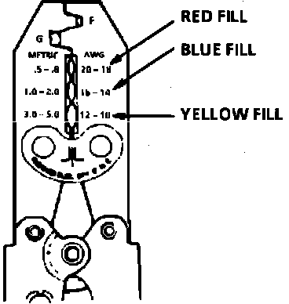
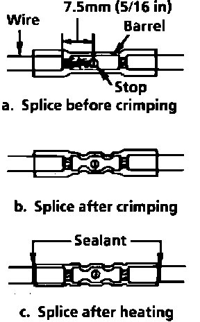

Splicing Copper Wire Using Crimp and Seal Splice Sleeves
Crimp and Seal splice sleeves may be used on all types of insulation except tefzel and coaxial to form a one to one splice. They are to be used where there are special requirements such as moisture scaling.Step 1: Open the Harness
If the harness is taped, remove the tape. To avoid wire insulation damage, use a sewing "seam ripper" to cut open the harness (available from sewing supply stores). The Crimp and Seal splice sleeves may be used on all types of insulation except tefzel and coaxial and may only be used to form a one to one splice.
Step 2: Cut the Wire
Begin by cutting as little wire off the harness as possible. You may need the extra length of wire later if you decide to cut more wire to change the location of a splice. You may have to adjust splice locations to make certain that each splice is at least 40 mm (1.5 in.) away from other splices, harness branches or connectors. This will help prevent moisture from bridging adjacent splices and causing damage.
Fig. 6 Wire Size Conversion Table:

Step 3: Strip the Insulation
If it is necessary to add a length of wire to the existing harness, be certain to use the same size as the original wire, see Fig. 6.
To find the correct wire size either find the wire on the schematic and convert the metric size to the equivalent AWG size or use an AWG wire gage. If unsure about the wire size, begin with the largest opening in the wire stripper and work down until a clean strip of the insulation is removed. Strip approximately 7.5 mm (5/16 in.) of insulation from each wire to be spliced. Be careful to avoid nicking or cutting any of the wires. Check the stripped wire for nicks or cut strands. If the wire is damaged, repeat this procedure after removing the damaged section.
Fig. 13 Hand Crimp Tool:

Fig. 14 Seal Splice Sequence:

Step 4: Select and Position the Splice Sleeve
Select the proper splice sleeve according to wire size. The splice sleeves and tool nests are color coded.
Using a crimp tool, Fig. 13, position the splice sleeve in the proper color nest of the hand crimp tool. Place the splice sleeve in the nest so that the crimp falls midway between the end of the barrel and the stop.
The sleeve has a stop in the middle of the barrel to prevent the wire from going further, Fig. 14. Close the hand crimper handles slightly to hold the splice sleeve firmly in the proper nest.
Step 5: Insert Wires into Splice Sleeve and Crimp
Insert the wire into the splice sleeve until it hits the barrel stop and close the handles of the crimper tightly until the crimper handles open when released. The crimper handles will not open until the proper amount of pressure is applied to the splice sleeve. Repeat steps 4 and 5 for opposite end of the splice.
Step 6: Shrink the Insulation around the Splice
Using a suitable heat gun, apply heat where the barrel is crimped. Gradually move the heat barrel to the open end of the tubing, shrinking the tubing completely as the heat is moved along the insulation. A small amount of sealant will come out of the end of the tubing when sufficient shrinking is achieved, Fig. 14.